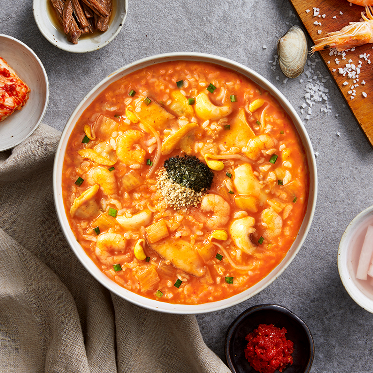

본죽 review
본죽 신메뉴 소개
내가 뽑은 최애 메뉴 소개
최근(2020)마케팅 전략
해물 김치 해장죽(10,000원)

속을 개운하게 풀어주는 한 그릇, 해물 김치 해장죽
금방이라도 속을 개운하게 풀어줄 것 같은 매콤새콤한 김치에 새우, 오징어 등의 해산물과 콩나물을 넣어 시원한 감칠맛까지 잡아냈어요.
해장에 좋은 재료들을 넣고 뭉근하게 끓여 국물 맛은 한층 진하게, 영양은 한층 든든하게 완성했습니다. 속 을 개운하게 풀어주고 싶은 날, 얼큰한 별미가 당기는 날 해물김치해장죽으로 식사하세요